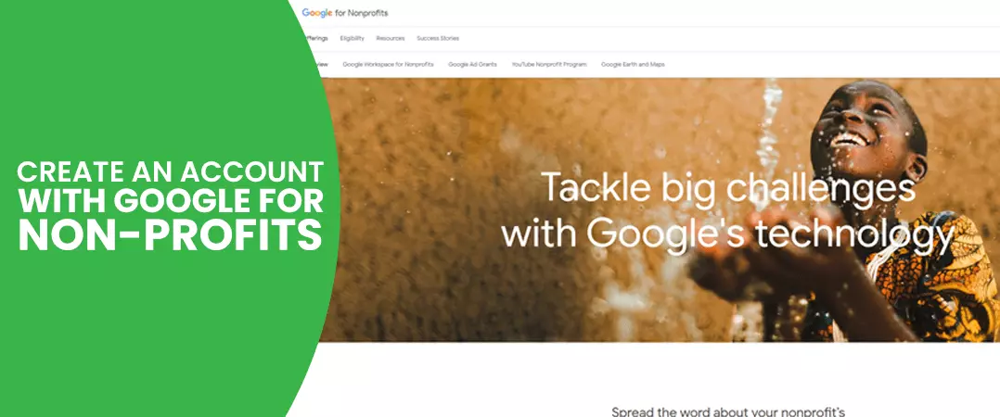
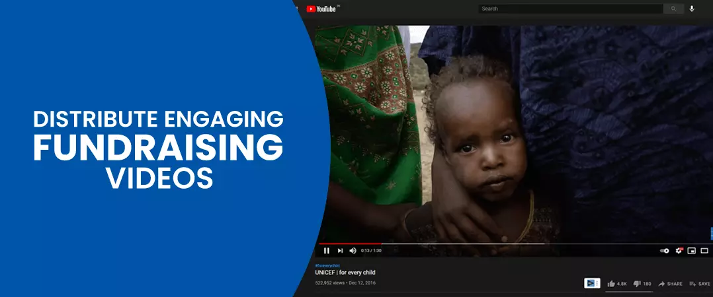
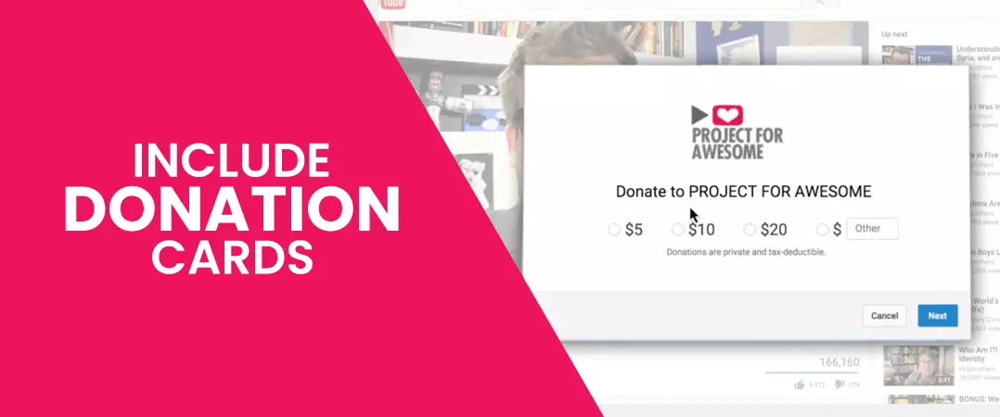
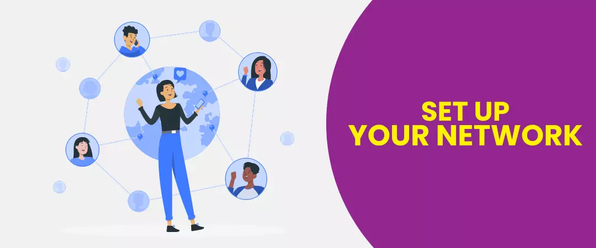
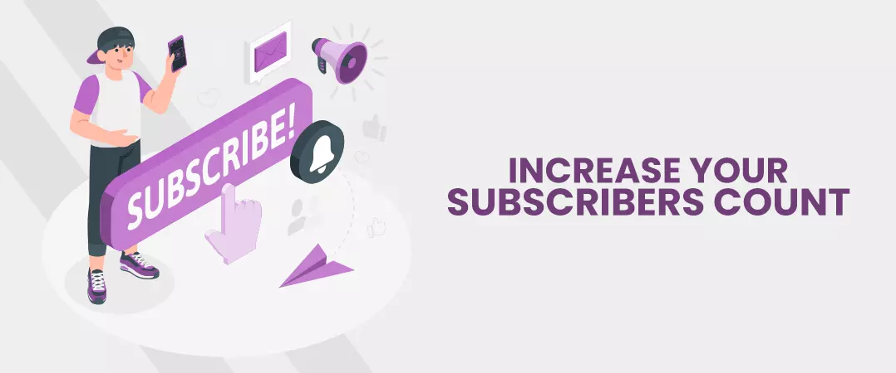
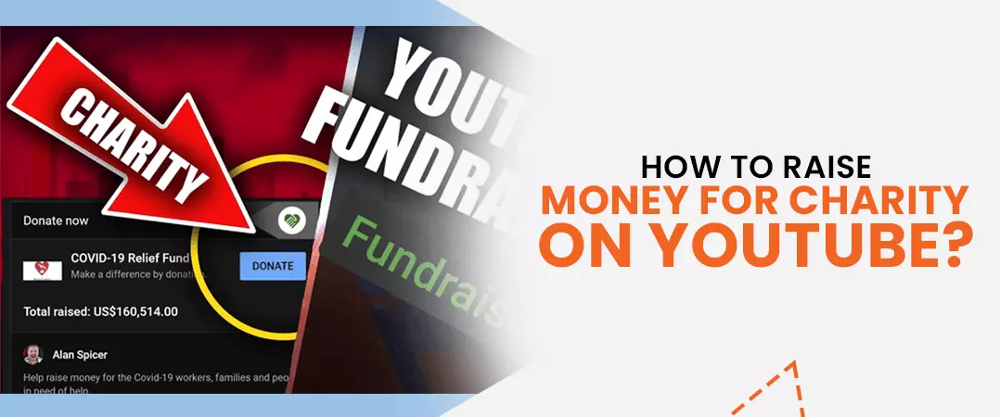
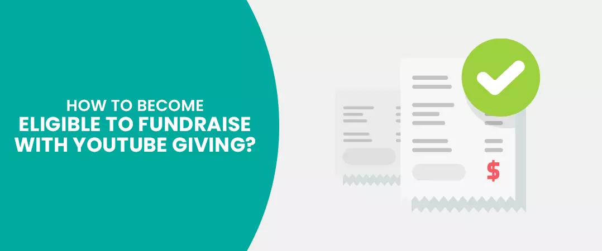
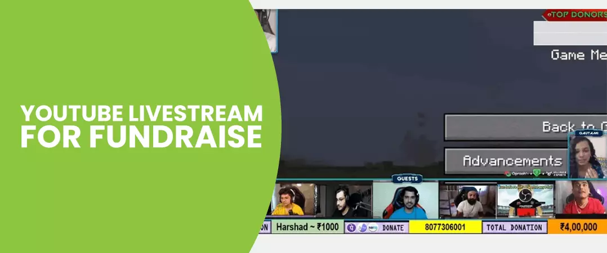
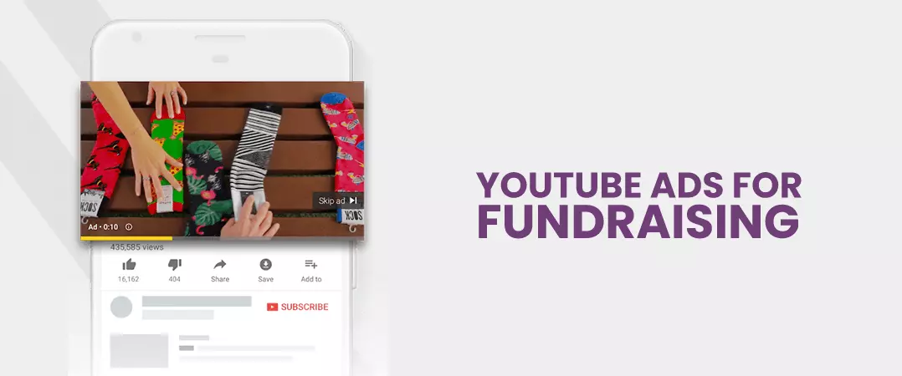

If you're online, there's a good chance you've seen a YouTube video. YouTube is the world's second most popular search engine, with 73 percent of American adults. utilizing it on a daily basis. One of the most popular content types is video, which is frequently shared on social media. Because video is favored by Google and other search engines, posting video on YT with excellent video titles , descriptions, and tags is a wonderful method to boost your search engine rating. Video is a quick and efficient way to get your message out. People respond favorably to visual signals, and video is a great way to capture the mood and physical characteristics of whatever you're selling. YouTube just surpassed 2 billion monthly registered users, accounting for over a third of the world's population!
It's also the most popular platform among 18 to 24-year-olds, with 85 percent of this demographic using it (compared to just 51 percent for Facebook). While many people use YT to learn how to do home renovations, prepare a specific dish, or just to unwind by watching beautiful animal videos, the popular site may also be beneficial to NGOs.
So, how can NGOs make the most of this tremendous instrument to develop movements, advance causes, and generate funds for their organizations?
Contents
- 1. Create an account with Google for Nonprofits
- 2. Distribute engaging fundraising videos
- 3. Include a donation card in your fundraising video
- 4. Set up your network
- 5. Increase the number of subscribers to your YouTube channel by optimizing it
- 6. How to raise money for charity on YouTube?
- 7. How to become eligible to fundraise with YouTube Giving
- 8. How to use YouTube live stream for fundraiser
- 9. How can YouTube ads help in fundraising?
How to launch a fund-raising campaign on YouTube channel?
1. Create an account with Google for Nonprofits

The first step for your organization is to formally register with YouTube, which is owned by Google. To finish this task, you'll need the following elements:
- An account with Google for Nonprofits (free). To get started, go to google.com/nonprofits and select the "Get Started" option.
- A YouTube ID and a channel. Here's where you can learn how to make a channel and where you can get your channel ID.
The major advantage of creating a free Google for Organizations account is that qualifying nonprofits will soon be able to raise funds directly on YT without having to refer donations to an external website.
Erin Turner, Product Manager for YouTube Giving, stated in August 2018 that the company is launching a new set of fundraising tools for organizations, which now includes:
Fundraisers-
Fundraisers resembles Facebook fundraisers, with a Donate button and a fundraising campaign page placed directly next to a video or live broadcast.
Fundraisers in the community
Various "Creators" are able to raise money for the same fundraising on multiple YouTube channels and videos, all of which are updated at the same time.
Campaign compatibility-
Matching donations or campaign compatibility from companies or other artists are shown immediately within the Fundraiser or Community Fundraiser.
For the Greater Good, Super Chat-
Super Chat for Good is designed for those that already use Super Chat in their live broadcasts and YT Premiere films.
Bonus: Google pays all processing expenses, ensuring that registered organizations receive 100% of all donations!
2. Distribute engaging fundraising videos

A fundraising video is not the same as a marketing video. A successful marketing video captures passersby' attention, piques their curiosity, and entices them to learn more.
An effective fundraising video evokes such powerful emotions in me that I feel compelled to assist and participate. It also asks for money in a simple and concise manner and provides a link or a means to pay right away.
3. Include a donation card in your fundraising video

Don't worry if you don't currently have access to YT Giving tools; you can still use Donation Cards in your videos for fundraising! To assist you raise the most money with this tool, YT provides a useful FAQ and troubleshooting page for Donation Cards.
When your fans view your video, they can donate from within YouTube (similar to Facebook contributions), so you don't have to lose potential contributors by transferring them to another website. The best part is that anybody or any business that uploads a video to YT may use Donation Cards to generate money for your organization directly on their videos.
Tips for getting the most out of YouTube Donation Cards:
- To prevent confusing your viewers, just use one card each video.
- Make it clear to viewers that they should click on the information symbol.
- Make the text intriguing and clickable – what will pique someone's curiosity now that they've seen your video?
- Make sure the wording on the Donation Card is clear and appropriate to the video that is connected to it.
- Don't display the Donation Card at the conclusion of the video; instead, position it around the 30-second or 1-minute mark, depending on where you notice the largest drop-off in viewing.
Note: Your organization must opt in to receive money from Network for Good through Guide Star in order to collect donations using Donation Cards. Google does not really charge any fees, much as the Giving tools, so 100% of the revenues go to your charity.
4. Set up your network

If your supporters aren't aware that Donation Cards are a realistic and simple fundraising alternative, it's unlikely that they'll go out of their way to find out. Encourage your tribe to produce fundraising films on your behalf with a brief email or social media post. Alternatively, you could just add your nonprofit's Donation Card to one of their current films.
YT has made an Outreach Toolkit available for free, which includes email templates that you can customize, clip, paste, and send to your network.
5. Increase the number of subscribers to your YouTube channel by optimizing it

The more followers you have, the more people who will watch your video. The subscriber metric is also used by YouTube to determine when and when to recommend content to other users. You can buy YouTube subscribers as well from reputed service providers.
Your channel trailer — the first video viewers watch when they visit your channel – is a great method to achieve this.
Visit the Creators Academy website for more information on how to build your channel to reach more prospective donors, which includes case studies, suggestions, and guided courses.
How to raise money for charity on YouTube?

Generally, charities utilize two sorts of video: 30 second “persuasive” films and 1–2-minute educational movies for YouTube giving fundraising. These are organized into playlists that include places, issues, sponsors, and justifications, and are geared to certain audiences.
Storytelling is a big component of charity's YT presence. A touching narrative, such as Oxfam's bathroom video, demonstrates how your organization has made a significant difference, while a snappy, emotive story, such as Save the Children's "A second a Day," may draw attention to injustice. Virtual reality is used in a few movies, such as War Child's "Duty of Care," to provide a first-hand experience that may be highly successful, but expensive.
Staff and guest stars are increasingly being used by charities to generate regular features or one-off material, such as WaterAid's "Made of the Same Stuff" campaign. Storytelling films are simple to publish on social media and can help raise awareness of a charity's brand or the issues it addresses.
Campaign videos invite viewers to engage in dialogue, sign petitions, or write letters both inside and outside of the platform. Plan International developed a video to help donors connect with the causes they care about. Charities, on the other hand, are less likely to be able to seek funds, and this is usually only done in the case of emergency pleas.
Videos, such as Tearfund's "What is Poverty?" Video may be an effective way of communicating material, whether as traditional or regular features or as demonstrations of charity, concepts or activities.
How to become eligible to fundraise with YouTube Giving

YouTube Giving allows creators to donate to organizations that are important to them. By including a contribute button in their movies and live streams, eligible channels may generate money for charities. On the video watch page or in the live chat, viewers may give directly.
YouTube Giving isn't available for videos aimed for children. When uploading videos to your campaign, you won't notice any films marked as produced for kids.
Criteria for eligibility
Your channel must fulfill the following criteria to be eligible to fundraise with YT Giving:
- Channel is based in one of three countries: the United States, Canada or the United Kingdom.
- There are at least 10,000 subscribers on the channel.
- The Partner Program includes this channel.
- The channel is not labeled as suitable for children.
How to use YouTube live stream for fundraiser

Create a YT Giving campaign and include it into your videos or live streams. The contribute button on the new video or on live chat allows fans to give.
To use YouTube Studio (RS Blog 27 Link), you must first log in:
- Select Monetization, then Giving from the left menu.
- After that, click Get started. Make a fundraising campaign.
- Choose a 501(c)(3) nonprofit organization in the United States to support. Request a nonprofit if the 501(c)(3) organization you'd want to support isn't listed. Find out more about the charities that are accessible.
- To add specifics to the fundraiser, such as a title, description and collaborators, follow the instructions. Setting a fundraising target and timeframe is also recommended. You have the option to modify it at any moment.
- Include videos and/or planned live broadcasts with a donation button.
- PUBLISH is the option to choose.
You may also set up fundraising in the Live Control Room under Advanced Settings while setting up your YT live stream.
How can YouTube ads help in fundraising?

A YouTube advertisement is a commercial that displays before other videos on YT, as well as beside playing videos and in results pages. Any video posted to YT may be used as an advertisement, which is ideal for those of us who enjoy reducing, reusing, and recycling. It is a powerful tool when it comes to fundraising for organizations as you can promote your messages by converting your videos into advertisements.
What you'll need for a YouTube Ads
- Link to a video on YouTube
- The URL on your site where you want people to land and convert also known as landing page.
Are you ready to launch a successful fundraising campaign on your channel?
Feel free to share!